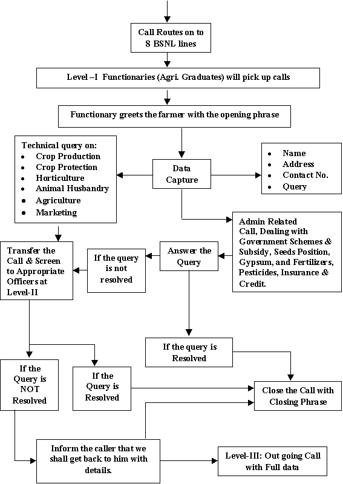

AEXT 392 :: Lecture 09 :: INNOVATIVE INFORMATION SOURCES

INNOVATIVE INFORMATION SOURCES
CYBER EXTENSION IN RURAL DEVELOPMENT
Information is an important resource in modern agriculture. The development of computers and improvements in telecommunications offers farmers and extension workers, many new opportunities to obtain technical and economic information quickly and use it effectively for their decision-making. The modern farmer is an entrepreneur who tries to grow right crops and animals in the most profitable way. The amount of information a farmer can and should use for his management decision is increasing rapidly.
Previously the mass media gave generalized advice to farmers, but with modern Information Technology, extension can provide for each farm and farmer without visiting the farm personally. The following are few modern information technology flows.
1. View data:
This transmits the information from a central computer by telephone line to the screen of a home television set or a computer. The amount of information the system can store is limited only by the capacity of its computer. The farmer interacts with the central computer containing the database. He can request the computer to make certain calculation by combining information from the database with information from his own farm.
2. Tele text:
It is a system somewhat like view data in which printed information is telecast through television rather than transmitted through a telephone line. It has no interactive capacity and it has a very much smaller database.
3. Micro Computer:
Through a microcomputer on the farm, the farmers can process accounts and data from their farm production. Many extension agents in industrialized countries now have microcomputers and can make similar calculations for farmers.
4. Net work system:
Net work system in which view data is connected with the microcomputer of the farmers or extension agents. This makes it possible to use data or computer programmes from view data in the microcomputer or to process data from the farm in the view data mainframe computer, which can accommodate more complicated models than a microcomputer. These network systems become important between farmers and their suppliers and customers. They can also be used for extension information when they have been installed for that reason.
5. E-Mail
E-mail is the short form for electronic mail, which is based on the use of computers for the transmission of messages rather than through the postal system. The E-mail system connects a network of personal computer (PC) spread over the globe. A PC is set up as a message server in the system. The users at other PCs can link up with the server at any time to receive and transmit messages.
Each user to the E-mail system is allocated a look number or address in the E-mail directory. To send a message, a user has to "key-in" the message in his PC along with the directory numbers allotted to him and the receiver of the message. The sender can indicate if the message is confidential or universal and set a time limit for its retention. The receiver on receiving the message is his/her computer terminal can get it printed on paper.
The main advantages of E-mail are that it cuts down the delay involved in postal transmission of messages. Moreover, messages can be sent at any time of day or night which are stored and can be retrieved by the recipient at his or her convenience. Besides, once the contact between the transmitter and receiver PCs is established E-mail requires only a few minutes time to transmit even if it is a bulky message.
6. Fax (Or) Facsimile
It is a device used for transmission of a written document, photograph, map or any other graphic, material electronically. It is one of the variants of E-mail. For transmission, the original documents placed in the facsimile or fax machine which scans the document and converts the written or graphic information into electronic signals and establishes a link up with a similar receiving fax machine at the receiving end. The receiving fax reconverts the electronic signals into written or graphic form. As the sending machine scans the documents, the receiving machine reproduces the scanned image, which is an exact duplicate of the originals.
A typical fax machine can transmit a document of A4 size in less than a minute over thousands of kilometers. Since fax operates through the normal telephone lines the fax number is usually a telephone number. In addition, the same STD and ISD codes are used for sending a fax to another city or another country. The document is scanned page by page in the fax machine. Like the E-mail, fax communication eliminates the postal delay and is very convenient for communication between persons located in different time zones, but it costs more than the E-mail.
7. Internet
The Internet is a network of networks, the international linking of tens of thousands of business, universities, and research organisations with millions of individual users. The Internet is a global electronic community of over 50,000 interconnected computer network, which means more than 50 million people are linked together, computing on what has been aptly termed as the "information super highway". Internet has added a new dimension to our existence by placing within easy reach an overwhelming range of information. It gives each of us the option to be a publisher of our information and views.
The Internet offers a wealth of business opportunities. More and more business firms are advertising their services to customers on the Internet. The Internet is a source of up-to-date information and assistance too, related to business, stock market, education, research, medical advances etc., Many organisations also set up an "Internet". This is a network used on the Internet to communicate and share information across the organisation.
8. Optical Communication Technology
Use of light waves for communication purposes gave rise to the modern technology of optical communication. In this new method, optical fibers that are very thin, long stands of ultra purity glass are being used to link the transmitter and the receiver. Information in the form of a series of light pulses produced by small semiconductor lasers is passed through such fibers. At the receiving end these light pulses are converted back into original information using appropriate detectors and decoders. Human voice, TV pictures and computer data can be transmitted and received with great ease and convenience using optical fiber communication techniques.
9. Cellular Mobile
It is popularly known as car telephone, and this service allows two-way communication between a mobile or fixed telephone and another mobile or fixed telephone. All standard facilities like STD, ISD, Fax etc., are available with mobile phones. The mobile phones need not be fixed to an ear but if the set is portable, one can carry it wherever he moves.
10. Radio paging
It is called as poor man's cellular telephone, facilitating one way mobile communication to users. A person carrying a pager can be contacted while he or she is on the move, by his office or even others. If one gets a message on his pager that he was required and should call up the number, which flashes, on his pager, all one needs to do is to go the nearest public call office and establish contact with his office. In fact an extensive page-phone networks, in conjunction with radio paging, is a good substitute for cellular network. The pagers are particularly useful for professionals on the move.
11. Very Small Aperture Terminal Technology (VSAT) service
This service provides satellite-based network for business communication using the cost effective VSAT technology. All it does is to link head office of company or a corporate house to its various locations like factories, service units and other offices particularly those located in remote areas, using satellite network. Such networks are called Closed User Group (CUG) network. Besides high-speed data transmission from one location to another, people can even talk on the network.
12. Electronic Data Interchange (EDI)
It enables two organisations usually a customer and supplier to exchange routine documents such as purchase orders and invoices using standard electronic forms and their own computers linked through a service provider. It is faster. Cheaper and reliable means of exchanging export documents. It works on internationally accepted protocols and facilitates quicker exchange of documents.
13. Voice mail
If one wants to enjoy the benefits of telephone, without actually owing one, he should subscribe to voice mail. Get a voice mail address (similar to a telephone number) and he can get all his calls on that number. In the evening or any given point of time he can access his mailbox, from any telephone to see (or listen) if there is any mail waiting for him. It is just like owing a postbox in the post office.
14. Video Conferencing
Holding a conference with one's foreign partners or addressing a press conference in four different cities without travelling long distances has become a reality with the advent of video conferencing. All one has to do is to go to the studio of the service provider at the appointed hour and hold a videoconference, through satellite links, within India or abroad. Such a system cuts travel costs and time for executives of top companies.
KISAN CALL CENTER (1800-180-1551)
The country today has an impressive telecom network both in the private and Government sector. Over 5 lakh villages have a public telephone in the country. It has been felt for long that this impressive telecom network could be put to effective use for delivering knowledge and information to the farming community. A call centre based extension service will be delivering knowledge and information exactly as per the requirements of the farming community. This system would also help to keep a record of what is being delivered to the farmers in terms of knowledgeandinformation. The Kisan Call Centre scheme is available throughout the country. The Kisan Call Centrescheme has been functioning from 21.1.04.The Call Centres can be accessed by farmers all over the country on common Toll Free Number 1800-180-1551. Since 10th June, 2004, the Call Centres service has been made available right from 6 A.M. to 10 P.M. except on Sundays and gazetted holidays, beyond these hours the calls are attended in the voice recording mode.
KISAN CALL CENTRE - Concept
The challenges before Indian Agriculture are immense. This sector needs to grow at a faster rate than in the past to allow for higher per capita income and consumption. About two thirds of workforce directly or indirectly dependent on agriculture. This sector generates about 28 percent of its GDP and over 15 percent of exports. Rising consumer prosperity and the search by farmers for higher incomes will simultaneously drive crop diversification. Export opportunities for agricultural products are also expected to continue to grow, provided India could meet the stability, quality and presentation standards demanded by foreign trade and consumers and maintain its comparative advantage as a relatively low cost producer.
Given its range of agro-ecological setting and producers, Indian Agriculture is faced with a great diversity of needs, opportunities and prospects. The well endowed irrigated areas which account for 37 percent of the country's cultivated land currently contribute about 55 percent of agricultural production, whereas, rainfed agriculture which covers 63 percent accounts for only 45 percent of agricultural production. In these less favorable areas, yields are not only low but also highly unstable and technology gaps are much wider as compared to those in irrigated areas. If it is to respond successfully to these challenges, greater attention will have to be paid to information-based technologies. Both technology generation and transfer will have to focus more strongly than ever before on the themes of optimization in the management of their available resources by producers. In order to make information transfer more effective, greater use will need to be made of modern information technology and communication among researchers, extensionists and farmers have to be utilized.
Public extension system requires a paradigm shift from top-down, blanket dissemination of technological packages, towards providing producers with the knowledge and understanding with which they solve their own location - specific problems. Continuous two-way interaction among the farmers and agricultural scientists is the most critical component of Agricultural Extension.
At present, the issues have been addressed by the Extension Systems of State Departments of Agriculture, State Agricultural Universities (SAUs), KVKs, NGOs, Private Extension Services through various extension approaches in transfer of technology. With the availability of telephone and Internet, it is now possible to bridge this gap to quite a large extent by using an appropriate mix of technologies.
The Department of Agriculture & Cooperation, Ministry of Agriculture, Govt. of India has launched Kisan Call Centers with a view to leverage the extensive telecom infrastructure in the country to deliver extension services to the farming community. The purpose of these Call Centers is mainly to respond to issues raised by farmers instantly in the local language, on continuous basis.
Details of the Scheme:
- The Indian Agriculture is on the threshold of a second revolution. It is becoming increasingly clear that the next leap will come from the information and the knowledge transfer to the agriculture sector, together with the other traditional inputs and interventions. The real challenge before the policy makers is to overcome the information asymmetry between farmer and farmer, village and village, region and region and the country as a whole versus other countries. Fortunately, the developments in the field of communication and information technology in India make it possible to attempt this task.
- The country today has an impressive telecom network both in the private and Government sector. Over 5 lakh villages have a public telephone in the country. It has been felt for long that this impressive telecom network could be put to effective use for delivering knowledge and information to the farming community. With the limited number of extension workers, there is a need to use the latest technologies for delivering extension services. Towards this, the Department of Agriculture and Cooperation has been working on schemes to use both Mass-Media and telecom network for the delivery of extension services.
- One of the draw-backs experienced in the current human resource based extension service has been that the monitoring authorities are not able to get a clear feed back on the quality of extension services being delivered in the villages. On the other hand a call centre based extension service will be delivering knowledge and information exactly as per the requirements of the farming community. This system would also help keep a record of what is being delivered to the farmers in terms of knowledge and information.
- The objective of the scheme has been to make agriculture knowledge available at free of cost to the farmers as and when desired.
- This scheme has an in-built system of monitoring and continuous evaluation for modifications and improvements. The services are also of a foundational nature. Many more exciting tiers will be built on this infrastructure.
- The Kisan Call Centre scheme is available all over the country. At present the Call Centre services are available at a common toll free telephone number which can be dialed from anywhere in the country. The location is immaterial as the calls can originate from any village to land at a specific call centre and a specific seat which would be answered by an agriculture graduate knowing the local language and having an understanding of the local agricultural issues.
- The call centres as operational today have been selected on the basis of a tender document which was floated by TCIL, a Govt. of India Company which was appointed by Department of Agriculture & Cooperation as the consultant.
- The Kisan Call Centre scheme has been functioning from 21.1.04. The Call Centres can be accessed by farmers all over the country on common Toll Free Number 1551.
The calls are received at 13 Call Centres wherein 116 Agriculture Graduates attend to answer the queries of the farmer in the local language. 123 experts located in different parts of the country at State Agriculture Universities, ICAR institutes, State Department of Agriculture, Horticulture and other developments are answering the calls at Level –II.
New Initiatives:
- Since 10th June, 2004 the Call Centres service has been made available right from 6 A.M. to 10 P.M. except on Sundays and gazetted holidays, beyond these hours the calls are attended in the IVRS mode.
Operational Mechanism
The Kisan Call Center is a synthesis of two hitherto separate technologies namely, the Information & Communication Technology (ICT) and the Agricultural Technology. To optimally utilize the strengths of both these systems, it was proposed to take full advantage of professionally managed Call Centre mechanism and dovetail it with the specialized knowledge of Agricultural Scientists and Extension Officers, so as to facilitate its reach to the farming community. Accordingly existing specialized infrastructure of Call Centers (which are normally industry-driven and serve to high-end and many a times, mission critical service sector) are made available to the Subject Matter Specialists of Agriculture, Horticulture, Animal Husbandry, Marketing and other related areas. The Kisan Call Center, consists of three levels – namely Level-I (the basic Call Center interface, with high quality bandwidth and local language proficient Agriculture graduate), Level-II (Subject Matter Specialists on concerned important crops and enterprises, connected through good bandwidth telecom and computer connectivity) and Level-III (the Management Group to ensure ultimate answering and resolution of all the farmers’ queries which are not resolved at Level-II, connected on off line mode).
Level –I: The call coming to the call center is picked up by an operator (level –I functionary) who after a short welcome message takes down the basic information and the query of the caller. These details are fed into a computer located next to the operator by the operator himself. At the first level, receiver of the call would also feeds into the computer the question being asked by the farmer.
The first level operators preferably would be an agricultural graduate with rural background knowing local language. They should also posses’ good communication skills. They would be in a position to answer a majority of the questions likely to be asked by the farmers.
Level-II: The level –II consists of Subject Matter Specialists (SMS) who are located at their respective place (Research Stations, ATICs, KVKs, Agricultural colleges), of work. In case the first level operator is not able to answer the question, the operator forwards (in call sharing mode) the call to the concerned Subject Matter Specialist. The data relating to the caller including the question asked is also be transferred to the Level-II functionary on his computer along with the call. Hence, when the specialist takes the forwarded call, his computer also shows the data and question asked so that there is no repetition. It is envisaged that in normal cases, the entire spill over questions from the first level get answered at this level. In case, it is not possible to answer, there is a system to revert back to the caller by post / fax / e-mail or by telephone in 72 hours.
While selecting the specialists, it would be important to first identify the major crops in that state and the issues on which the questions are likely to be asked. These specialists should be such that they will answer most of the questions that are likely to be asked. There could be two options available on the selections of the specialists.
One option could be to select commodity wise specialist, that is, every question related to a particular crop or commodity would be directed to that specialist, who would in turn answer that question. Other option could be to select general specialists who would deal with various subjects likely to arise. The specialists should ideally be located within a city. They should have good communication skills and should know the local language. These specialists should have at least a minimum of 10-15 years of field experience in their respective specialization.
Level – III: The level –III consists of a dedicated cell located at the Nodal Office. This would receive the questions that have not been answered at the first and the second levels. Appropriate replies to these questions whould be then framed in consultation with the concerned specialists available within or outside the State, by the nodal cell. The replies would be sent to the farmers promptly by post/e-mail/fax/ telephone etc. within 72 hours of receipt of the question. Knowledge Management System
- The Knowledge Management System is a software tool which has been developed by the Telecommunications Consultants India Ltd. (TCIL) a Government of India enterprise. The Kisan Call Centre shall be accessible on identified telephone number will provide all technical assistance to the caller and will record the queries along with the personal details.
- The Knowledge Management System shall be supported by the data base built up using the asked questions and their answers. The Kisan Call Centre report generation software will be provided the user interface forms in which the call Centre Agents has to put the parameter according to which he want the report to get generated. The report/data generated like date wise, crop wise, location wise, district wise, state wise, problem wise, level wise, call type wise, All India level wise will be available at the users end. The data generated through this Knowledge Management System will be available on internet after hosting.
Flowchart of Kisan Call Centre opertion

List of Kisan Call Centers
State / UT |
KCC Location |
Uttar Pradesh |
Kanpur |
Rajasthan |
Jaipur |
Jammu Kashmir |
Jammu |
Haryana |
Chandigarh |
Punjab |
|
Himachal Pradesh |
Shimla |
Jharkhand |
Ranchi |
Bihar |
Samstipur |
Orissa |
Bhubneswar (Kolkata) |
Karnataka |
Bangalore |
Tamilnadu |
Madras |
Andaman Nicobar |
|
Uttrakhand |
Dehradun |
Assam |
Guwahati |
Andhra pradesh |
Hyderabad |
West Bangal |
Kolkata |
Chattisgarh |
Raipur |
Kerala |
Trichur |
Lakshadeep |
|
Goa Daman Deu |
Vanamati Nagapur |
Maharashtra, Goa and Daman Diu |
|
RECENT DEVELOPMENTS
Access to information and improved communication is a crucial requirement for sustainable agricultural development. Modern communication technologies when applied to conditions in rural areas can help improve communication, increase participation, disseminate information and share knowledge and skills. It is being said that "Cyber Extension" would be the major form of technology dissemination in the near future.
However, it is observed that the rural population still has difficulty in accessing crucial information in order to make timely decisions. It is essential that information availability is demand driven rather than supply driven. The challenge is not only to improve the accessibility of communication technology to the rural population but also to improve its relevance to local development.
Considering the critical need for access to timely information and improved communication, this issue focuses on attempts made in different countries to transfer information to the rural population and success stories of such attempts. Bridging the '"last mile" between the haves and have nots will ensure that remote rural communities are better informed.
Bridging the "last mile"
Improved communication and information access is directly related to social and economic development. However it is observed that the rural population still have difficulty in accessing crucial information in forms they can understand in order to make timely decisions. There is a concern that the gap between the information rich and information poor is getting wider.
New information and communication technologies are generating possibilities to solve problems of rural poverty, inequality, and giving an opportunity to bridge the gap between information-rich and information-poor and support sustainable development in rural and agricultural communities. However remote rural communities still lack basic communication infrastructure.
The challenge is not only to improve the accessibility of communication technology to the rural population but also to improve the relevance of information to local development.
Technology in rural communication
A range of communication technologies have been used to meet the information needs of the rural population. These include rural radio, participatory video using a methodology called Rural Audiovisual pedagogy which uses participatory video as a communication tool for mediating between rural peoples needs and possible sources of information and expertise to respond to these needs.
The Internet is emerging as a tool with potential to contribute to rural development. Internet enables rural communities to receive information and assistance from other development organizations; offers opportunities for two-way communication. It can also support bottom-up articulation of development needs and perceptions, and thus help in reducing the isolation of rural communities. It can facilitate dialogue among communities and with government planners, development agencies, researchers, and technical experts; encourage community participation in decision making; and help agricultural researchers, technicians, farmers and others in sharing information.
A survey of Internet use in rural areas was conducted by Dr. Don Richardson and others in 1996. Rural Internet users indicate that the Internet provides them with a very convenient method for quickly accessing a large volume of information without being impeded by geographic barriers. They also report finding information of value from the Internet in the form of new ideas, discussion groups, access to expert advice, continuing education resources, increased global understanding and cultural awareness. Social benefits include new opportunities to overcome geographic isolation, increased social interaction, opportunities to organize and advocate for social change, equalization of urban/rural disparities and new links between urban and rural communities.
http://tdg.uoguelph.ca/www/rural/index.html
Telecentres
An approach that is being explored for providing rural access to modern information and communication technologies is through "telecentres" or "telecottages". The concept was first implemented in Sweden. Telecentres are centers located in isolated rural communities and have personal computers, printers, a modem, a fax machine, and a consultant. According to the Telecottage Association of UK, there are 120 telecottages in the United Kingdom, 49 in Finland, 40 in Australia, and 23 in Sweden and in Germany, Portugal, Ireland, Denmark, Canada, Norway, and Brazil. Some of their services include telephone and fax facilities, e-mail, Internet and electronic networks, access to databases and libraries. They can also link the Internet to local media such as radio and television and thus make information accessible to a wider audience. Telecentres not only facilitate single-point access to external information services (e.g. Government marketing and price information) or to global information through the WWW, but also help in organization of virtual village-to-village meetings and tele-training events thus facilitating local sharing of information.
(Comm for development group, SDRE, FAO Research, Extension and Training Division. at http://www.fao.org).
Many efforts are taking place throughout the developing world to give the rural population a sense of conceitedness by providing innovative methods to access information and to communicate/facilitate exchange of information among themselves and with other agencies. These are documented in the following pages.
Harnessing IT: Indian Scenario
There are cases of application of information and communication technologies that have made a difference in the delivery of services in rural India. Some of these include the Warana Wired village Project in Maharashtra; Milk collection in dairy co-operatives (National dairy Development Board); Information Villages Project (MS Swaminathan Research Foundation-International Development Research Centre); Information Technology application for Indian Rural Postal System (CMC Limited, Hyderabad); Knowledge Network for grassroots innovations (IIM, Ahmedabad); Application of Satellite Communication for Training Field Workers and Extension Workers in Rural Areas( ISRO); Computerisation of Mandal Revenue Offices (MROs) and computer aided administration of revenue department in Andhra Pradesh (Government of Andhra Pradesh.
In the Warana Wired Village Project covering 70 villages in Maharashtra the existing cooperative structure has been used with state of the art infrastructure to allow Internet access to existing cooperative societies. The aim is to provide information to villagers by establishing networked booths in the villages.
The Information Villages Project of the MS Swaminathan Research Foundation is aimed at bringing the benefits of modern information and communication technologies to rural families in Pondicherry. A Value Addition Centre which is the hub of the information network has been established in Villianur village and four information shops have been established in different villages.
National Dairy Development Board. IT-based machines are being used at milk collection centres, and in cooperatives to measure butterfat content of milk, test the quality of milk, and promptly make payment to the farmers. It has resulted in the removal of incentives to cut the milk by adding water, reduced time for payments from 10 days to less than five minutes, and instilled confidence in farmers in the cooperative set up. All of these factors have helped the milk market to expand.
A CMC pilot project has installed a Computerized Universal Postal System and a Centralised Accounting and Reporting System in three post offices in Andhra Pradesh. The technology is designed for rural environments. The systems handle multifunctions within a postal office, reduce errors and waiting time, and provide transparent transactions.
ICT can help empower the knowledge rich but economically poor people. Under the "Honey-Bee" knowledge network (of the IIM, Ahmedabad) used to augment grassroots inventors and overcome language, literacy and localism a large number of grass root inventions have been identified and documented as short multimedia presentations. Future plans include creating a database of such innovations and making them accessible via a wide area network.
One way video, two way audio teleconferencing interactive networks have been used for education and training by Indian Space Research Organisation. The major application of the network in rural development was for training extension staff from various departments of the state governments. In addition, a large number of women, Panchayati Raj elected officials, primary school teachers, and child development workers spread over large distances have been trained.
Information and communication technologies are an important part of the Government of Andhra Pradesh’s efforts to improve the efficiency of its administrative offices. AP is the first state in India to design a statewide computerization program that will be used in rural areas, at the mandal-level ( the administrative unit above the village-level panchayat). There are 1124 mandals in the state. The first software application, is the issuance of certificates pertaining to land holdings, caste, nativity and income across a common counter, without the current delay of 15 to 20-days.
The AP State Wide Area Network (APSWAN), aims to link the state government’s Secretariat with 23 District Headquarters, serving as the backbone for "multi-services" (voice, video, and data) that would be used for improved co-ordination between state headquarters and district offices in managing various regulatory, developmental, and hazard mitigation programs of the state government. Mandals will be served by this two-way communication, and electronic commerce applications will be developed. The AP Value Added Network Services project hopes to deliver a variety of public services through a large network of information kiosks.
The Computer-aided Administration of Registration Department (CARD), a project of A.P. aims to introduce a transparent system of property valuation, which is easily accessible to citizens.
| Download this lecture as PDF here |